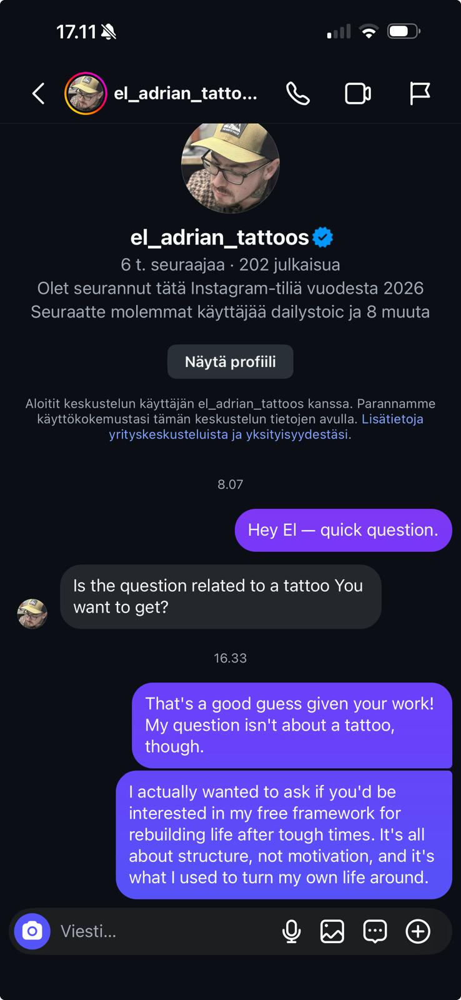
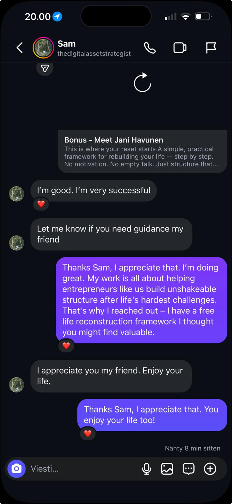
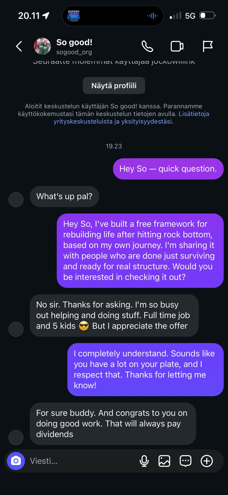
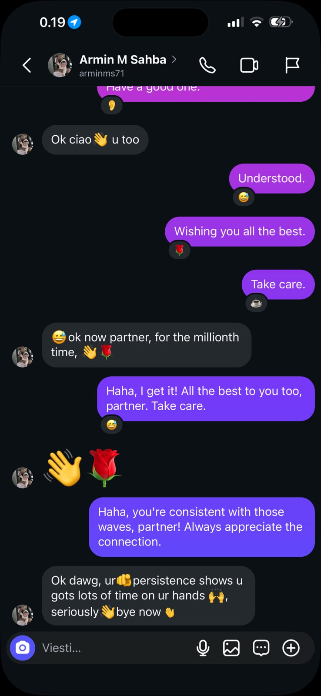
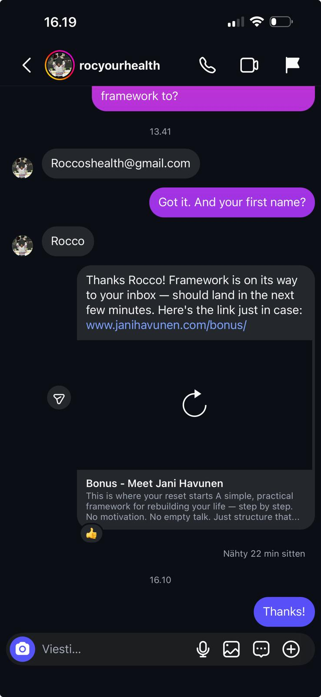

Turn Instagram conversations
into clients.
Prospect research lists, an AI assistant that drafts replies in your voice, follow-up cadence tracking, and a pipeline that never loses a conversation.
Most clients see ROI within the first 2 weeks.
What is FounderFlow?
FounderFlow is a self-serve CRM and conversation platform for Instagram-first businesses: verified prospect research lists delivered to your dashboard, an AI assistant that drafts every reply in your voice for your review, follow-up cadence tracking across Instagram, LinkedIn, and Email, and pipeline management with booking sync.
Product description: Customers receive a web-based CRM dashboard plus optional research services. Features include: (1) Prospect Research — niche-targeted, verified contact lists prepared for your business and imported into your dashboard; (2) Growth Program — a written engagement and content cadence plan implemented with you; (3) Conversation Inbox — manage and qualify inbound DMs in one place with AI-drafted reply suggestions; (4) Follow-Up Cadence — structured follow-up reminders and tracking so no conversation is lost; (5) Complete Platform — everything combined. All plans include a CRM pipeline, an AI assistant that drafts replies in your brand voice for your review, Calendly/Cal.com booking sync, and customer support at marvin.2000.sluis@gmail.com. You remain in control of your Instagram account at all times: messages are sent from your own account, and you are responsible for complying with Instagram's Terms of Use.
The FounderFlow Stack
Six modules that turn Instagram conversations into clients.
Prospect Research
Targeted, verified prospect lists researched for your niche and imported into your dashboard. Ready-to-contact contacts, monthly refresh.
Growth Program
A real cadence you can follow: content plan, engagement targets, and audience tracking — implemented together, reviewed together.
Conversation Inbox
All inbound DMs in one workspace: qualify prospects, see full history, and sync your booking link the moment intent appears.
Follow-Up Cadence
Structured follow-up reminders and tracking. Prospect research, conversation history, and next steps — nothing slips through.
AI Assistant
When a prospect replies, the AI drafts the reply in your voice — questions, objections, intent detection. You review and send, your calendar link goes with the conversation.
Complete Platform
Prospect Research + Growth Program + Conversation Inbox + Follow-Up Cadence + AI Assistant. One CRM for your whole Instagram pipeline.
Your Dashboard
Everything you need to monitor your growth — leads, DMs, replies, calls booked — all in one place.
Your Competitors Are Already Organized
Every day you spend tracking conversations in spreadsheets, the founder using FounderFlow is 50 follow-ups ahead of you. That compounds fast.
Live Platform Activity
Real conversations and replies being tracked — right now.
The Difference
Manual outreach vs. FounderFlow — side by side.
Manual Outreach
- 2-3 hours/day juggling chats
- Spreadsheet tracking
- Follow-ups forgotten
- Third of conversations go cold
- Replies sit for hours
- No idea what's working
With FounderFlow
- 15 min/day checking pipeline
- Built-in CRM pipeline
- Follow-up cadence (3-step)
- AI replies drafted for you
- Reply tracking in seconds
- Full analytics dashboard
Real Results
10,000+ conversations tracked. 0 accounts banned. One system, one account, steady growth.
I have been running FounderFlow locally, and it has performed exactly as expected. The system is well designed, easy to work with, and delivers on what it promises.
What has impressed me the most is the team behind it. They have been incredibly responsive, knowledgeable, and genuinely committed to helping. Every question has been answered quickly, and the level of support has been outstanding throughout the process.
Based on my experience so far, I can confidently recommend FounderFlow to anyone looking for a reliable outreach system backed by a professional team.
The Pipeline
We research. We organize. We track. You close.
Conversion
System
Research
Import
Conversation
Tracking
(Drafts Reply)
Sequence
Prospect
Booking
Conversation
Client
Real Results
Actual DM conversations and replies generated by FounderFlow.





What Clients Say
Real feedback from founders running FounderFlow every day.
I was spending hours every day keeping up with DMs and follow-ups. A friend told me about FounderFlow and I was skeptical at first — I had tried other tools before that felt unsafe on my account. The warmup pacing and careful system won me over. My follow-ups actually happen on schedule now and I just show up to the calls that matter.
I run two different outreach campaigns through FounderFlow, one for my course launch and one for affiliate partnerships, and both just work. The AI Setter trained on my brand voice in an afternoon, and the follow-up sequences catch leads I would have lost track of. Every question I have had since launch was answered within a few hours by the team.
If Our System Doesn't Deliver, You Don't Pay
If your workspace isn't fully set up — prospect lists imported, AI drafts working, pipeline live — within your first 48 hours, we refund the setup fee. No questions asked. You only pay for a system that actually works.
Getting Started
Three steps from scattered chats to a managed pipeline.
Book a Call
15-minute conversation to understand your niche, goals, and whether FounderFlow is the right fit. No pitch deck, no pressure.
We Set Everything Up
Your workspace is configured for your Instagram account, your niche, and your offer. The AI Assistant is trained on your persona and voice, with greeting and reply templates ready for your review.
Work the Pipeline
Prospect research lands in your dashboard, the AI drafts replies in your voice, follow-up reminders keep every conversation alive. You check the pipeline and show up to meetings.
What You Actually Need
How FounderFlow's conversation system compares to the alternatives. Honest.
| What You Need | FounderFlow | Hiring a VA | ManyChat | Manual DMs |
|---|---|---|---|---|
| Verified prospect list | Provided & imported | You search | You search | You search |
| Never lose a conversation | Full history + cadence | Scattered chats | Inbound only | Only memory |
| AI reply drafts in your voice | Trained on your voice | Needs training | Keyword menus | You write |
| Handles follow-ups | 3-step cadence | If they remember | Basic triggers | You forget |
| Books calls for you | AI shares Calendly | Manual | Manual | Manual |
| Runs 24/7 | VPS or local | 8h/day max | If someone messages | Only when you work |
| Your time | ~15 min/day | 1-2h managing | Hours building flows | 2-3h/day |
| Live support | Direct founder access | VA manages themselves | Bots / tickets | You're on your own |
Why Founders Choose FounderFlow
What separates us from every other outreach tool on the market.
Full AI Conversation Engine
Not keyword menus. Not templates. A real AI that reads every message, understands context, and replies in your voice. It asks questions, handles objections, and moves conversations toward your goal.
Follow-Up Cadence
3-step follow-up reminders and tracking. Conversations that go quiet get a gentle nudge on schedule. No one falls through the cracks, no one forgets to check.
Telegram Notifications
Get instant alerts when someone replies, books a call, or shows buying intent. You stay in the loop without babysitting the inbox.
Built-In CRM Pipeline
Every lead tracked from first DM to closed deal. No spreadsheets. No "where did that conversation go?" You see your entire pipeline in one view.
Warmup-Aware Sending
New accounts start at 30% daily volume and ramp to 100% over 14 days. Sending stays within safe per-account limits, and the system pauses immediately if anything is flagged.
Multi-Language Support
AI replies in any language. English, Spanish, German, Dutch — doesn't matter. You can run outreach in markets where competitors can't.
Runs as a Desktop Application
No browser extensions. No cloud dashboards that break. Download the app for Windows or Mac, install, and it runs. That's it.
0% Account Bans
Warmup ramp + human-paced sending + instant pause on any flag = your account stays safe. We've never had a client get banned. Not one.
Zero Tech Skills Needed
Download the app. Enter your Gemini key. Click start. No coding, no server setup, no API configuration. If you can install an app, you can run FounderFlow.
Simple, Transparent Pricing
Choose the plan that fits your stage. Upgrade or cancel anytime.
Starter
For solo founders getting started with Instagram outreach.
- Prospect Research (1 niche)
- Workspace conversations up to 50/day
- AI Assistant (basic)
- Email support
Pro
For founders scaling outreach across channels.
- Prospect Research (unlimited niches)
- Workspace conversations up to 75/day
- AI Assistant (advanced, brand-trained)
- LinkedIn + Email sequences
- Priority support
Agency
For agencies managing multiple client accounts.
- Everything in Pro
- Multi-workspace management
- White-label dashboard
- Dedicated support
All plans include a free trial. Cancel anytime. Need help choosing? Email marvin.2000.sluis@gmail.com.
Growth Services
Modular services that scale with your business. Pick what you need, upgrade when you're ready.
Prospect Research
Targeted prospect research and verified contact lists for your niche. Delivered ready to contact.
- Targeted prospect research
- Niche filtering & targeting
- Verified contact details
- Monthly list refresh
Growth Program
A growth program with content cadence, audience targets, and reporting — implemented with you.
- Audience growth strategy
- Niche-targeted account discovery
- Human-paced engagement guidelines
- Account-safety review
Conversation Inbox
DM inbox management, qualification, and booking sync. For accounts with existing traffic.
- AI-drafted reply suggestions
- Lead qualification & scoring
- Calendly/Cal.com booking sync
- Works with your existing audience
Follow-Up Cadence
Follow-up cadence with AI drafts, conversation tracking, and pipeline stages.
- Everything in Prospect Research
- Personalized follow-up cadence
- AI Assistant for reply drafting
- Everything in Conversation Inbox
- 3-step follow-up sequences
- Full CRM pipeline
All-in-One Client Engine
The complete stack: Prospect Research + Growth Program + Conversation Inbox + Follow-Up Cadence + AI Assistant. One platform for your whole Instagram pipeline.
- Everything in Follow-Up Cadence
- Growth Program
- Full audience growth program
- Priority support & optimization
- Dedicated success manager
- Monthly performance reports
Pricing is tailored to your business. Book a call to discuss which services fit your growth goals.
Common Questions
How is my Instagram account protected?
FounderFlow is built to keep your account safe: human-paced sending, per-account limits, warmup ramp for new accounts, and instant pause if anything is flagged. You remain in control of your own account at all times, and you are responsible for complying with Instagram's Terms of Use.
Does the AI Assistant really sound like me?
The AI Assistant is trained on your persona, your tone, your product, and your angle. It drafts every reply fresh — no templates — asks questions to keep conversations moving, and suggests your calendar link when someone shows genuine interest. You review before anything is sent.
What niches does this work for?
FounderFlow works for any personal brand on Instagram, coaches, fitness professionals, consultants, real estate agents, creators, therapists, musicians, and small business owners. If you sell something and your clients are on Instagram, it works.
How much time does this save?
Most founders spend 2-3 hours a day on manual outreach. FounderFlow reduces that to about 15 minutes, just checking your pipeline and showing up to booked calls.
Do I need technical skills to use this?
No. You download the connector, log into your Instagram through it, and it securely syncs your session to your workspace. You just monitor results on the dashboard. Everything is shown in plain English: prospects added, conversations tracked, replies drafted, calls booked.
What services does FounderFlow offer?
We offer five services: Prospect Research for building contact lists, Growth Program for audience growth, Conversation Inbox for managing and qualifying inbound DMs, Follow-Up Cadence for never losing a conversation, and the Complete Platform with everything included. You can start with one service and upgrade as you grow.
Your client engine should be running right now.
Every day you wait is a day your competitors are booking calls. Book a call today, and your engine goes live within 7 days.